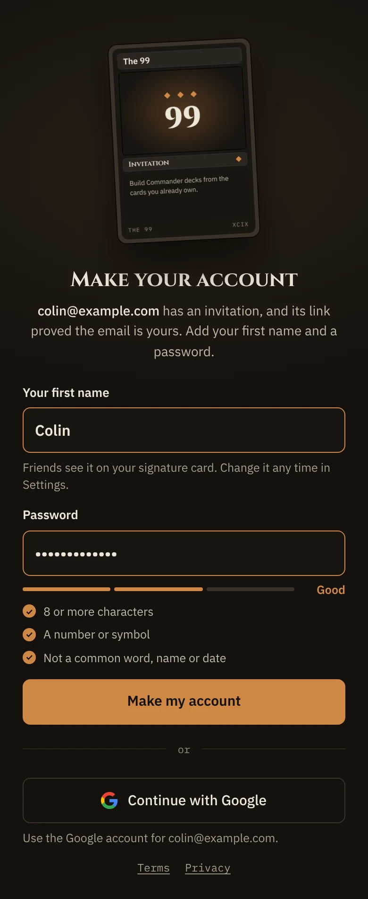
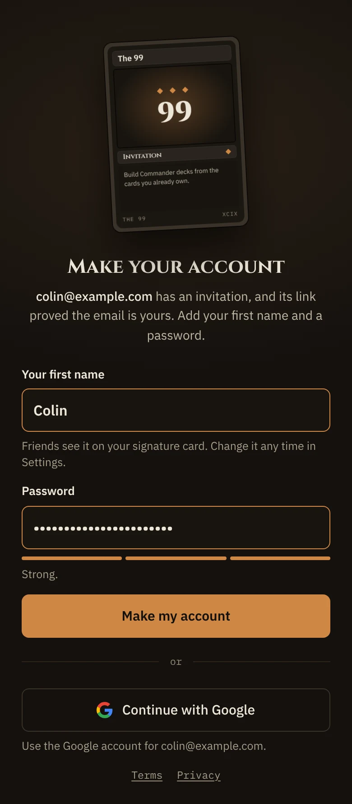
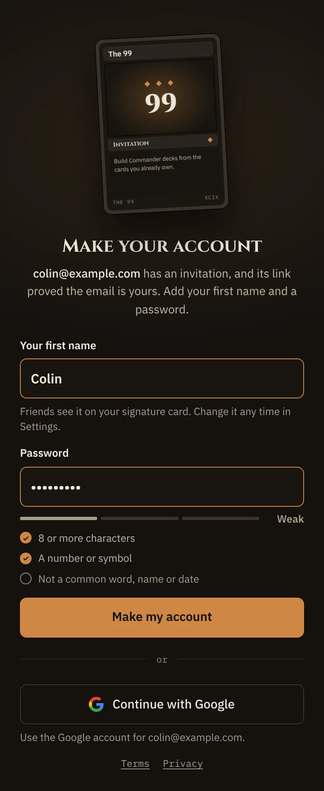
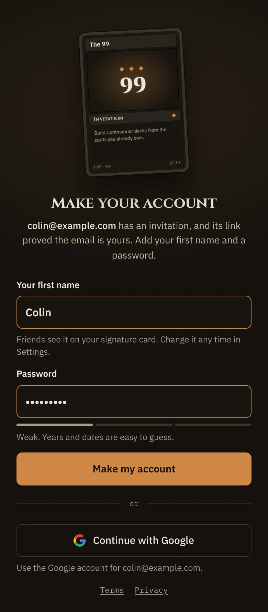
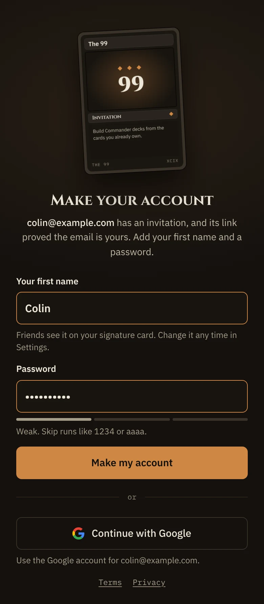
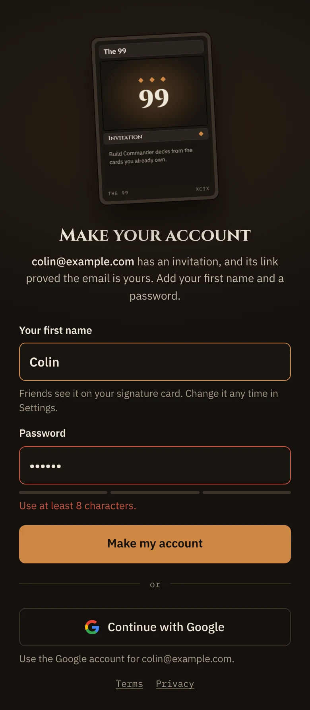
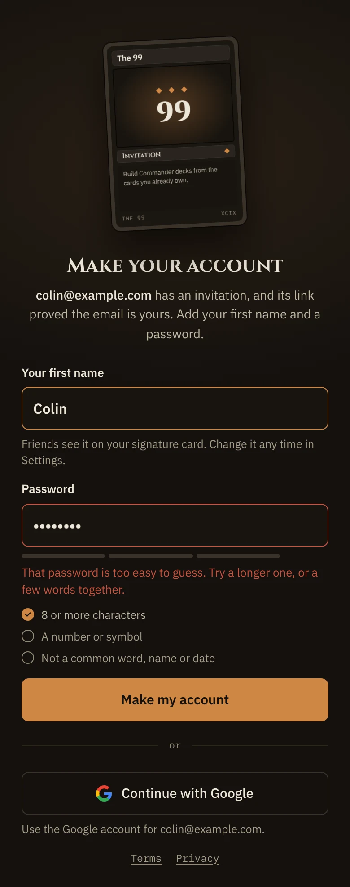
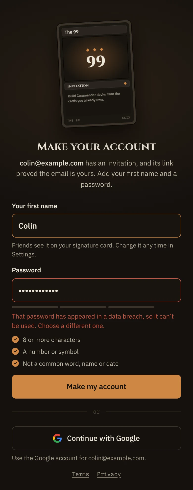

Q1 · Make your account: a meter and a live line in the hint's slot
A three-segment meter sits 8px under Password, and the hint line under it changes as the player types. Clerk still judges on the press: Q2 to Q4 take the same slot as today. Every frame is the shipped sign-up rendered with the shipped CSS (Low Sun), with the proposal in the hint's slot. Copy is DRAFT for /copy-review.
While typing

Nothing typed. The meter sits empty under the field, and the shipped hint stays word for word. The meter is there from the start, so nothing moves when typing begins.

1 to 7 characters. There's no estimate yet. The meter stays empty and the hint still says At least 8 characters. No counting and no red.

Clerk would refuse it. One segment lights in quiet ink (--fg-muted), never --danger, because typing is not an error. The line names the fix for this password. Here it's all letters, so it asks for a number or symbol, or another word.

Clerk level 2 passes. Two segments light in --accent. Good. is as far as the line goes, and it makes no breach claim.

Comfortably past. All three segments light in --accent. The word is Strong. and nothing more, so it never promises the password is safe from breaches.
Weak, by what the estimator found (R1b, Hugh 2026-11-15: say what to change, not just "too easy to guess")
colinmtg. Add a number or symbol, or another word. Here a number or symbol really does lift the score.

password. Dressing it up with symbols won't get past Clerk, so the line asks for unrelated words instead.

colin1994. It already has a number, so the line names the problem: years and dates.

colin12345. It names the run. Counting up doesn't count as a number.
Colin#99. It has every character type and is still weak, so the line falls back to the general advice.
After the press (Clerk is the judge)

Pressed under 8. The shipped line, the danger edge and the slot are unchanged. The meter empties while a refusal shows.

Clerk's answer wins. The refusal keeps the shipped first sentence, then adds the same fix the live line gave, in --danger. The next keystroke clears it, as today, and the live line comes back.

Only the press can know. This one read Good. while typing. On the press Clerk's breach refusal takes the slot and the meter empties, so nothing on screen still reads as good.

What ships now. The hint alone, with no meter. A weak password is only found out after the press.